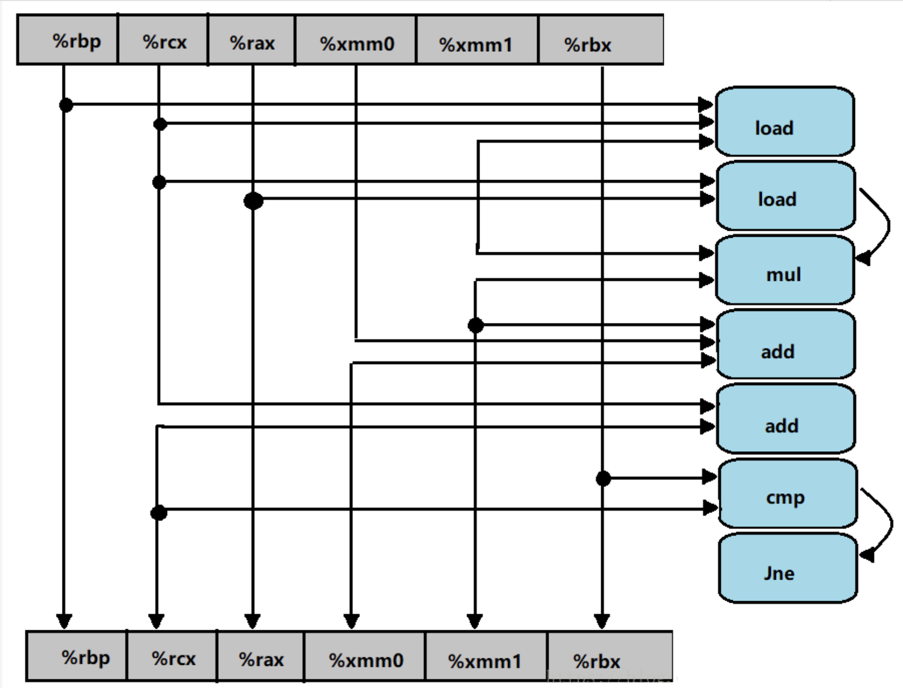
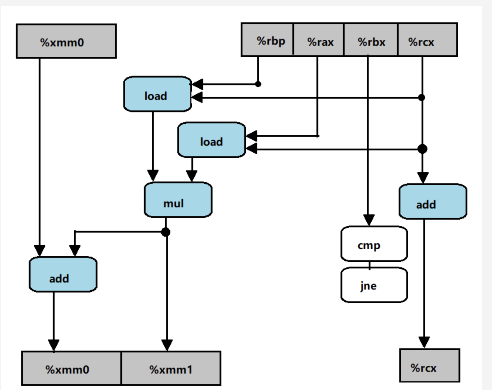
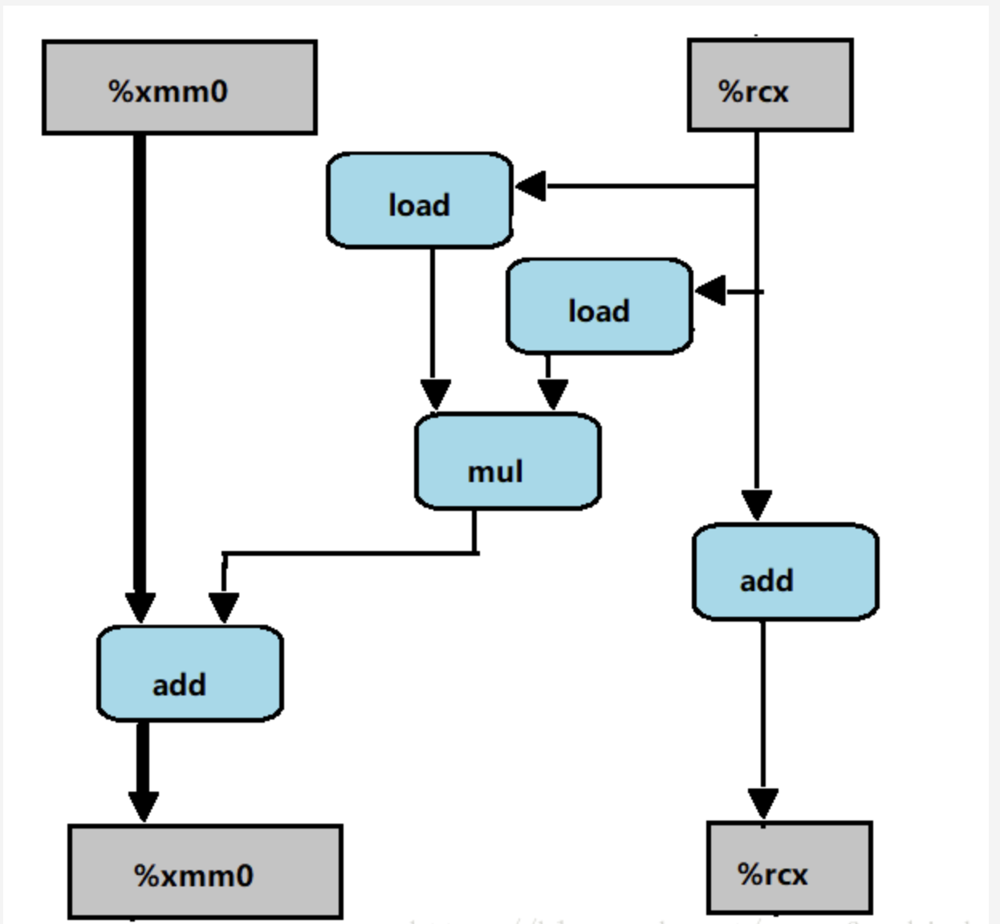

A. 这个函数执行n个乘法和n个加法，是原始函数poly中乘法数量的一半 B. 我们可以看到，这里的性能限制计算是反复地计算表达式result=a[i]+x*result。从来自上一次的迭代的result的值开始，我们必须先把它乘以x（5个时钟周期），然后把它加上a[i]（3个时钟周期）。因此，每次迭代需要8个时钟周期。正好等于我们测量到的CPE。 C. 虽然函数poly中每次迭代需要两个乘法，而不是一个，但是只有一条乘法是在每次迭代的关键路径上出现。
5.9
这道题说明了编码风格上的小变化能够让编译器更容易地察觉到使用条件传送的机会：
1 2 3 4 5 6 7 8
while(i1 < n && i2 < n){ long v1 = src1[i1]; long v2 = src2[i2]; long take1 = v1 < v2; dst[i1+i2] = take1 ? v1 : v2; i1 += take1; i2 += (1-take1); }
5.13
A. 画图
   关键路径为第三幅图加粗部分
关键路径上只有浮点数加法CPE为3.0
整数加法的延迟界限，CPE 为 1.00
关键路径上只有浮点加法,结合图理解
5.14
1 2 3 4 5 6 7 8 9 10 11 12 13 14 15 16 17 18 19
voidinner4(vec_ptr u, vec_ptr v, data_t *dest) { long i; long length = vec_length(u); data_t *udata = get_vec_start(u); data_t *vdata = get_vec_start(v); data_t sum = (data_t) 0; for (i = 0; i < length-6; i+=6) { sum = sum + udata[i] * vdata[i] + udata[i+1] * vdata[i+1] + udata[i+2] * vdata[i+2] + udata[i+3] * vdata[i+3] + udata[i+4] * vdata[i+4] + udata[i+5] * vdata[i+5]; } for(; i < length; i++) { sum = sum + udata[i] * vdata[i]; } *dest = sum; }
doublepoly_6_3a(double a[], double x, long degree) { long i = 1; double result = a[0]; double result1 = 0; double result2 = 0;
double xpwr = x; double xpwr1 = x * x * x; double xpwr2 = x * x * x * x * x;
double xpwr_step = x * x * x * x * x * x; for (; i < degree - 5; i+=6) { result = result + (a[i]*xpwr + a[i+1]*xpwr*x); result1 = result1 + (a[i+2]*xpwr1 + a[i+3]*xpwr1*x); result2 = result2 + (a[i+4]*xpwr2 + a[i+5]*xpwr2*x);